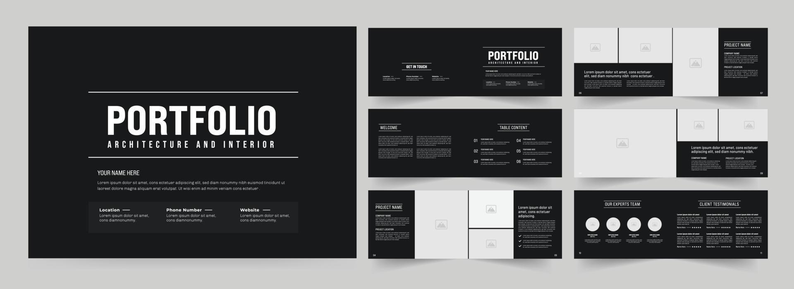
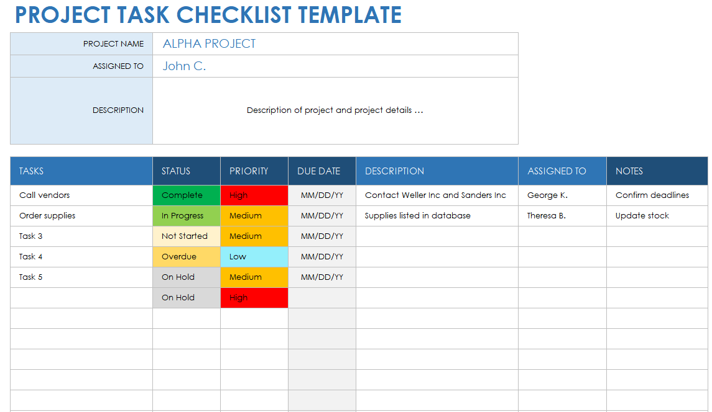

Projects
E-Commerce Website

Developed a fully functional e-commerce website using the MERN stack, featuring user authentication, product listings, and a secure checkout process.
Personal Responsive Portfolio
Created a personal portfolio website to showcase my skills, projects, and experiences. Designed with a responsive layout for optimal viewing across devices.
To-Do List Application
Built a simple and efficient to-do list application with task management features using JavaScript, enhancing productivity with a user-friendly interface.